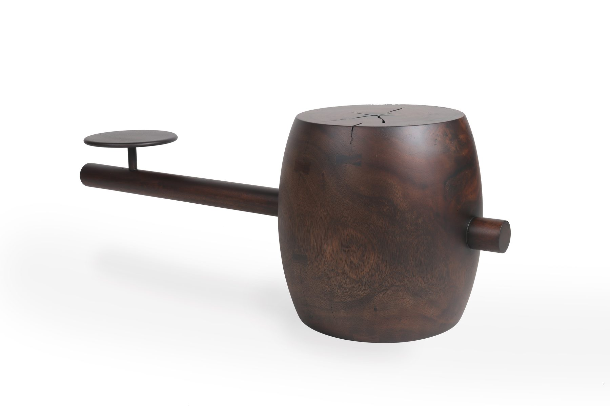
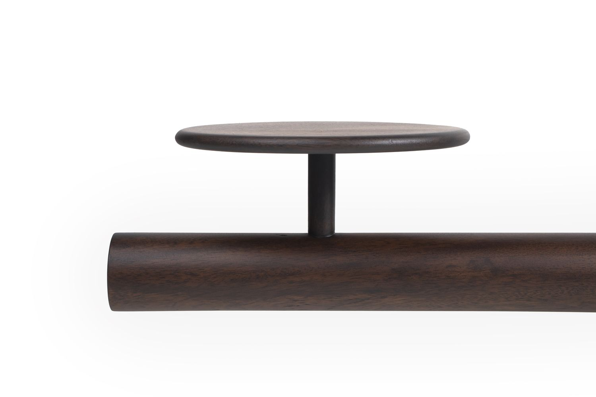
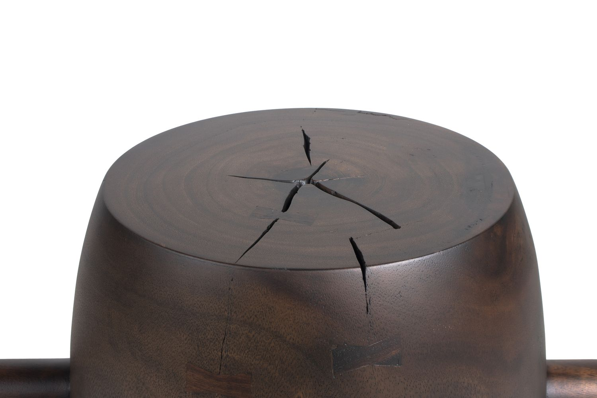
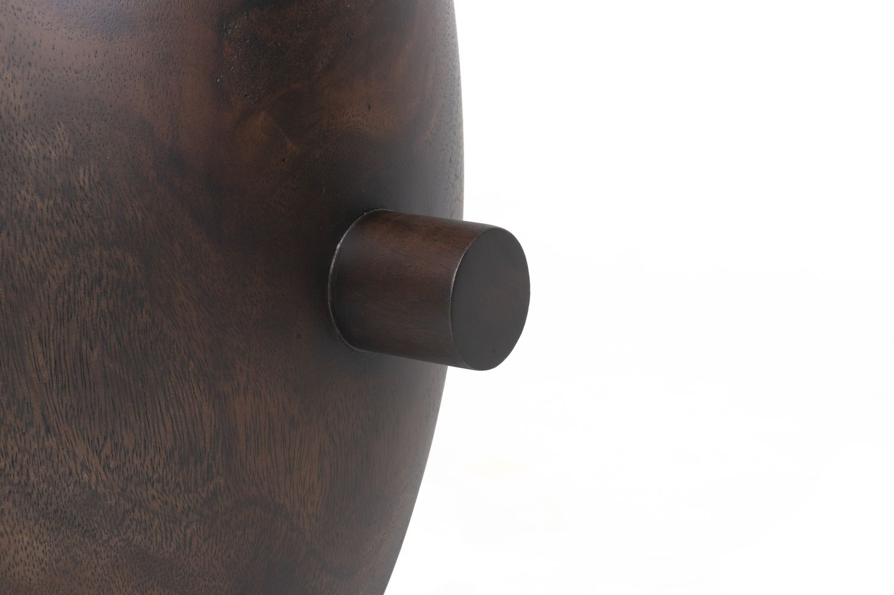

WORK 08 / 29
Hammer
Opposing forces meet in a study of balance.
Year2018
MaterialsChanchuri
StageLimited edition

DESIGN STORY
Hammer studies the relationship between strength and vulnerability. A weighty timber body is paired with an extended, delicate-looking arm and platform. The contrast creates a sense of tension, yet each part depends on the other. Here, balance is not achieved through sameness but through the coexistence of opposing forces.
PROJECT LINKS
- Moonlerwww.moonler.com
PROJECT DETAILS
- Brand / Manufacturer
- Moonler


